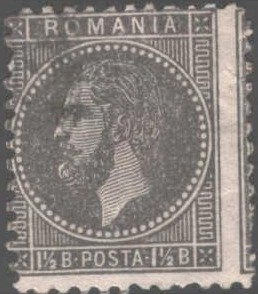
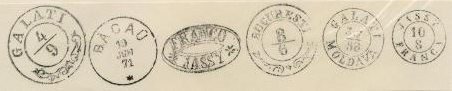
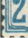
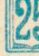
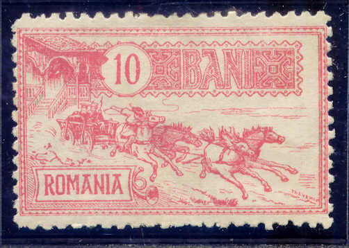

Return To Catalogue - Rumania - Cancels on stamps of Rumania
Note: on my website many of the
pictures can not be seen! They are of course present in the
catalogue;
contact me if you want to purchase it.
For issues before 1872 click here.
1 1/2 b green 1 1/2 b black (1879) 3 b green 5 b brown 5 b green (1879) 10 b blue 10 b red (1879) 15 b brown 15 b red (1879) 25 b orange 25 b blue (1879) 30 b red (1878) 50 b red 50 b yellow (1879)
Some stamps were printed in Paris, they have perforation 14 x 13 1/2. Other with more defective perforations and printing were printed locally (11 to 13 1/2.). Errors exist: 5 b red and 5 b blue (the red misprint has even been reprinted).
Value of the stamps |
|||
vc = very common c = common * = not so common ** = uncommon |
*** = very uncommon R = rare RR = very rare RRR = extremely rare |
||
| Value | Unused | Used | Remarks |
| 1 1/2 b green | *** | * | |
| 1 1/2 b black | * | c | |
| 3 b | *** | ** | |
| 5 b brown | *** | * | Misprint 5 b blue: RR |
| 5 b green | *** | c | Misprint 5 b red: RRR |
| 10 b blue | ** | * | |
| 10 b red | *** | c | |
| 15 b brown | *** | * | |
| 15 b red | RR | *** | |
| 25 b orange | *** | * | |
| 25 b blue | *** | *** | |
| 30 b | RR | *** | |
| 50 b red | RR | *** | |
| 50 b yellow | R | *** | |
Fournier has made forgeries of these stamps.

In the above forgery, there is a white line below the neck which is much clearer visible than in the genuine stamps.
Forgery(?):

The above forgery has the cancel "GALATI 4/9", however, it is NOT similar to the one that can be found in 'The Fournier Album of Philatelic Forgeries' (see below, the letters and numbers are completely different).

I've also seen forgeries of the misprints 5 b red and 5 b blue.
Forgery of the 5 b blue misprint.
15 b brown 25 b blue
These stamps exist with various perforations.
Value of the stamps |
|||
vc = very common c = common * = not so common ** = uncommon |
*** = very uncommon R = rare RR = very rare RRR = extremely rare |
||
| Value | Unused | Used | Remarks |
| 15 b | *** | c | |
| 25 b | *** | c | |

1 1/2 b black 1 1/2 b black on blue 3 b olive on blue 3 b violet 5 b geeen on green 5 b green 10 b red on yellow 10 b red 15 b brown 15 b brown on brown 25 b blue 25 b blue on yellow 50 b brown on yellow
These stamps exist with watermark.
Value of the stamps |
|||
vc = very common c = common * = not so common ** = uncommon |
*** = very uncommon R = rare RR = very rare RRR = extremely rare |
||
| Value | Unused | Used | Remarks |
| 1 1/2 b black | * | c | |
| 1 1/2 b black on blue | ** | * | |
| 3 b violet | ** | * | |
| 3 b olive on blue | ** | * | |
| 5 b green | *** | * | |
| 5 b green on green | ** | c | |
| 10 b red | *** | * | |
| 10 b red on yellow | ** | * | |
| 15 b brown | *** | c | |
| 15 b brown on brown | *** | * | |
| 25 b blue | *** | * | |
| 25 b blue on yellow | *** | * | |
| 50 b | *** | * | |
Fournier has made forgeries of these stamps. They can be recognized by inspecting the left bottom, in the genuine stamps, the second inner white line is curved (it follows the value shield). In the Fournier forgeries, this line is continuing towards the bottom of the stamp.


Page from a Fournier Album.
At least one other forger has made forgeries of this series, I don't have any further information, see http://www.romaniastamps.com for more information.
1 1/2 b red 3 b violet 5 b green 10 b red 15 b brown 25 b blue 50 b orange
These stamps exist without and with watermark ('Arms' or 'P.R'), with various perforations.
Value of the stamps |
|||
vc = very common c = common * = not so common ** = uncommon |
*** = very uncommon R = rare RR = very rare RRR = extremely rare |
||
| Value | Unused | Used | Remarks |
| 1 1/2 b | c | c | |
| 3 b | * | c | |
| 5 b | * | c | |
| 10 b | ** | c | |
| 15 b | * | c | |
| 25 b | ** | c | |
| 50 b | *** | * | |
I've seen several of these stamps with perfins. Perfins were first introduced on Rumanian stamps in 1892. I've seen 'U' for 'Universul Cotidian' (Bukarest) on the values 1 1/2 b, 3 b and 15 b. I've also seen 'Schiel' on a 15 b stamp (Bratia Schiel; a paper factory in Brasov). Furthermore 'S&C.' (Schenker & Co, a transportation company in Bukarest) on 5 b and 50 b.

Most likely a forgery.
1 1/2 b red 3 b violet 5 b green 10 b red 15 b brown
These stamps were only valid for postage from 22 to 24 Mai of 1891.
Value of the stamps |
|||
vc = very common c = common * = not so common ** = uncommon |
*** = very uncommon R = rare RR = very rare RRR = extremely rare |
||
| Value | Unused | Used | Remarks |
| 1 1/2 b | *** | *** | |
| 3 b | *** | *** | |
| 5 b | R | R | |
| 10 b | R | R | |
| 15 b | *** | *** | |
Forgeries:
Above a page from a Fournier Album. In the forged 'BUCURESCI 23 MAI 91' cancel, there is always a break in the outer circle between the 'I' and the cross (see also the Serrane guide). In my view, in the 'BUCURESCI 22 MAI 91' a similar break can be found in the outer circle between the 'C' and the 'I' of 'BUCURESCI'.
(Reduced size, Fournier forgeries)

The ornament between "ROMANIA" and "JUBILEUL" is different from the genuine stamps in the above forgeries.
1 b (BANI) brown 1 b (BAN) brown (1902?) 1 b black (1903) 1 1/2 b black 1 1/2 b yellow (1911) 3 b brown 5 b blue 5 b green (1899) 10 b green 10 b red (1899) 15 b red 15 b black (1899) 15 b grey (1902?) 15 b violet (1903) 25 b violet 25 b blue (1899) 40 b green (1898) 40 b brown (1918) 50 b orange 50 b red (1918) 1 L brown and red 1 L green and black (1903) 1 L green (1918) 2 L orange and brown 2 L brown and black (1903) 2 L orange (1918)
These stamps exist without watermark, or with watermarks 'PR' or 'part of large arms'. An error exists 25 b blue (the blue of the 5 b stamp).
Value of the stamps |
|||
vc = very common c = common * = not so common ** = uncommon |
*** = very uncommon R = rare RR = very rare RRR = extremely rare |
||
| Value | Unused | Used | Remarks |
| 1 b brown | c | vc | (BANI) |
| 1 b brown | c | vc | (BAN) |
| 1 b black | c | c | |
| 1 1/2 b black | * | c | |
| 1 1/2 b yellow | c | * | |
| 3 b | * | c | |
| 5 b blue | * | vc | |
| 5 b green | * | vc | Shades of green |
| 10 b green | * | vc | |
| 10 b red | * | vc | |
| 15 b red | * | vc | |
| 15 b black | * | vc | |
| 15 b grey | ** | vc | |
| 15 b violet | ** | vc | |
| 25 b violet | * | c | |
| 25 b blue | * | vc | |
| 40 b green | *** | c | |
| 40 b brown | * | c | |
| 50 b orange | *** | c | |
| 50 b red | * | * | |
| 1 L brown and red | *** | c | |
| 1 L green and black | *** | c | |
| 1 L green | * | c | |
| 2 L orange and brown | *** | * | |
| 2 L brown adn black | *** | ** | |
| 2 L orange | ** | * | |
I have seen forgeries of the 1 L green and black and the 2 L brown and black. More information on a forgery of the 2 L brown and black can be found at http://home.no.net/bhb1/ro-f02e.htm. The forgery described there has the 'O' of 'DOI' more slanting to the right than in the genuine stamps (this can easily be observed).
1 b brown 3 b brown 5 b green 10 b red 15 b black 25 b blue 40 b green 50 b orange
These stamps have perforation 14 x 13 1/2.
Value of the stamps |
|||
vc = very common c = common * = not so common ** = uncommon |
*** = very uncommon R = rare RR = very rare RRR = extremely rare |
||
| Value | Unused | Used | Remarks |
| 1 b | * | * | |
| 3 b | * | * | |
| 5 b | * | * | |
| 10 b | * | * | |
| 15 b | * | * | |
| 25 b | *** | *** | |
| 40 b | *** | *** | |
| 50 b | *** | *** | |
Non issued stamp of this serie? reduced size
There are two different kinds of forgeries of these stamps. They are quite deceptive. More info on these forgeries can be found at: http://home.no.net/bhb1/ro-f03e.htm.

Example of a forgery of the 10 b
I presume that this is a genuine stamp.
Distinguishing characteristics of the most common forgery; the
backside of the hat is not attached to the hat itself (see red
arrow) and the hoof of the horse does not touch the beam in front
of it. Tyler in 'Focus on Forgeries' says that this forgery is
more common than the genuine stamps and that it was probably
prepared by the Paris printer E.Cote, who
was also involved in some reprints of the 1903 Haiti issue.

These forgeries exists imperforate, example of an imperforate 50
b forgery.

15 b black 25 b blue 40 b green 50 b orange 1 L brown 2 L orange 5 L lilac
Value of the stamps |
|||
vc = very common c = common * = not so common ** = uncommon |
*** = very uncommon R = rare RR = very rare RRR = extremely rare |
||
| Value | Unused | Used | Remarks |
| 15 b | *** | *** | |
| 25 b | R | R | |
| 40 b | R | R | |
| 50 b | R | R | |
| 1 L | R | R | |
| 2 L | R | R | |
| 5 L | *** | *** | |
These stamps are known to have been forged; for a description of these forgeries see: http://home.no.net/bhb1/ro-f07e.htm. In the original stamps, there is a blotch in the line below the 'R' of 'ROMANIA'. The forgeries don't have this blotch.
Forgeries
For later issues of Rumania, click here.


{kind=link}
{kind=link}
{kind=link}
{kind=link}
{kind=link}